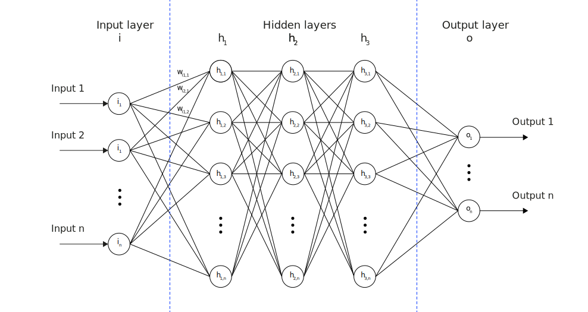

Neural Networks
Introduction to AI (I2AI)
Neu-Ulm University of Applied Sciences
June 1, 2025
Introduction
Discussion
What makes handwritten digit recognition trivial for humans but extremely difficult for traditional programming?
Limits of traditional programming
Traditional programming approaches fail at tasks that humans find effortless.
For instance:
- Recognizing handwritten digits: Each “3” looks different, yet we instantly recognize the pattern
- Understanding context: “The bank” could refer to a financial institution or a river’s edge
- Learning from examples: We don’t need explicit rules to recognize new instances
Recap: machine learning
Traditional programming:
\(Input + Program \rightarrow Output\)
Machine learning:
\(Input + Output \rightarrow Program\)
Differences
- Instead of writing explicit rules, we provide examples (training data)
- The machine learns patterns from these examples
- The resulting model can then make predictions on new, unseen data
Neural networks
Introduction
Neural networks solve problems that traditional programming cannot handle:
- Pattern recognition in noisy, variable data
- Decision making with incomplete information
- Automation of complex cognitive tasks
- Scaling human-like judgment to massive datasets
Discussion
If you had to design a learning system inspired by the brain, what key components would you include?
What is a neuron?
A neuron
receives inputs → weights them → sums up → activates
- This number is called the activation of the neuron
- High activation (close to 1.0) = neuron is “firing” or “lit up”
- Low activation (close to 0.0) = neuron is inactive
- Think of it as how excited the neuron is about a particular feature
Network architecture

Connections between neurons
Each connection between neurons has a weight (positive or negative) — a number that gets adusted during learning.
- Positive weight: If the first neuron fires, it encourages the second neuron to fire
- Negative weight: If the first neuron fires, it discourages the second neuron from firing
- Bias: A constant added to shift when the neuron should activate

Example: digit recognition
Example architecture for detecting digits of the MNIST dataset1:
28×28 pixels → Neural Network → 10 probabilities
- Input layer: 784 neurons (28×28 pixels)
Each neuron represents one pixel’s brightness (0.0 = black, 1.0 = white) - Hidden layers: 2 layers, 16 neurons each
These learn to detect patterns and features - Output layer: 10 neurons Each represents confidence for digits 0-9
Learning
The learning problem
Goal: Find the values of all k parameters that make the network classify digits correctly.
Challenge: This is a k-dimensional optimization problem!
(In our digit example it is 13,002-dimensional)
We need a systematic way to:
- Measure how “wrong” the network currently is
- Determine which parameters to adjust
- Make small improvements iteratively
Cost functions
Let’s measure “wrongness”
For a single training example, if the network outputs \((a_0, a_1, ..., a_9)\) but the correct answer is digit \(k\):
Desired output: \((0, 0, ..., 1, ..., 0)\) (1 in position \(k\), 0 elsewhere)
Cost for this example:
\(C = \sum_{j=0}^{9} (a_j - y_j)^2\)
where \(y_j\) is the desired output for neuron \(j\).
Gradient descent
Intuition: Imagine the cost function as a landscape with hills and valleys. We want to find the lowest valley (minimum cost).
Gradient descent algorithm:
- Compute the gradient (direction of steepest increase in cost)
- Move in the opposite direction (direction of steepest decrease)
- Take small steps to avoid overshooting
- Repeat until you reach a minimum
Backpropagation
Challenge: How do we compute the gradient of the cost function with respect to all k parameters efficiently?
Backpropagation algorithm:
- Forward pass: Run the network on a training example to get predictions
- Compute cost: Compare predictions to correct answers
- Backward pass: Use the chain rule2 to compute how each parameter affects the cost
- Update parameters: Adjust each parameter in the direction that reduces cost
This elegant algorithm, formalized by Rumelhart, Hinton, and Williams (1986), makes training deep networks computationally feasible (Sanderson 2017b).
Learning loop
- Start with random weights
- Make a prediction (forward pass)
- Measure the error
- Trace back to find responsible weights (backpropagation)
- Adjust weights to reduce error
- Repeat with the next example
Through millions cycles, the network gradually learns to recognize even complex patterns.
Using mini-batches for training
Mini-batch stochastic gradient descent:
- Shuffle the training data randomly
- Divide into small batches (e.g., 32 examples per batch)
- For each batch:
- Compute gradients for all examples in the batch
- Average the gradients across the batch
- Update parameters using the averaged gradient
- Repeat for many epochs3
Key insights
Neural networks excel at
- Pattern recognition in high-dimensional data
- Learning from examples rather than explicit rules
- Handling noisy, imperfect data
- Scaling to massive datasets
- Adapting to new data through retraining
Discussion
We’ve learned how neural networks can recognize digits. How might we extend this approach to understand and generate language?
Transformers
From images to language
The challenge
Key differences between images and text:
- Images has fixed size (e.g., 28×28 pixels) and spatial relationships matter
- Text has variable length, sequential relationships matter, and context is crucial
- Word meaning depends heavily on surrounding words
- “The bank was flooded” vs “I went to the bank”
- “model” in “machine learning model” vs “fashion model”
We need architectures designed specifically for sequential data with long-range dependencies.
Transformers (how LLMs work)
What is a Transformer?
A transformer is a neural network architecture specifically designed for processing sequences.
The attention mechanism is the key innovation — it allows every element in the sequence to “attend to” every other element.
Context is everything
Consider these sentences:
- “The tower was very tall”
- “The Eiffel tower was very tall”
The word “tower” should mean different things in different contexts:
- First case: Generic tower
- Second case: Specific famous landmark in Paris
Attention mechanism allow context words to update the meaning of other words.
Tokens and embeddings
Tokenization means that text is broken down into small chunks called tokens — a crucial preprocessing step that bridges human language and machine processing.
- “To date, the cleverest thinker of all time was…”
- Becomes: [“To”, “date”, “,”, “the”, “cle”, “ve”, “rest”, “thinker”, “of”, “all”, “time”, “was”, “…”]
Each token gets converted to a high-dimensional vector (e.g., 12,288 dimensions for GPT-3) — so called embedding vectors
- Similar tokens get similar vectors
- These vectors capture semantic meaning
This vector representation is what the transformer actually processes - it never sees raw text, only these numerical vectors (Sanderson 2024a).
Word Embeddings
Directions in embedding space can encode semantic relationships.
Examples:
- Gender direction: “king” - “man” + “woman” ≈ “queen”
- Plurality direction: “cat” - “cats” captures singular vs plural
- Country-capital: “Germany” - “Berlin” + “France” ≈ “Paris”
The embedding layer learns to place semantically related words close together in the vector space.
Attention
Rather than having fixed embeddings for each word, attention allows the embedding to be dynamically updated based on what other words are present in the context. This creates context-sensitive representations that can capture these nuanced meanings.
Single-head attention
Goal: Update the embedding of some word on the context of that word.
Three key matrices (learned during training)4:
- Query matrix \(W_Q\) indicates what types of context each word typically needs
- Key matrix \(W_K\) indicates what types of context each word can provide
- Value matrix \(W_V\) indicates what information to actually pass
Process:
- Compute attention scores between words
- Create weighted combinations of information
- Update embeddings based on relevant context
Example
The target word is “bank” (needs contextual disambiguation), the context word is “flooded”
The attention process
- Step 1: attention score:
“bank’s” query vector × “flooded’s” key vector = high similarity score
(the model has learned that water-related words are highly relevant for disambiguating “bank”) - Step 2: weighted information:
high attention score × “flooded’s” value vector = strong water/geography signal - Step 3: contextualized embedding:
original “bank” embedding + weighted “flooded” information = “riverbank” meaning
The ambiguity is resolved: we’re talking about a riverbank, not a financial institution
Multi-head attention
In reality different types of relationships matter simultaneously, such as
- Head 1 might focus on grammatical relationships (subject-verb agreement)
- Head 2 might focus on semantic relationships (synonyms, antonyms)
- Head 3 might focus on coreference (pronouns to their referents)
- Head 4 might focus on long-range dependencies (cause and effect)
Each head learns to specialize in different types of patterns and relationships.
GPT-3 example: 96 attention heads per layer × 96 layers = 9,216 total attention heads
Feed-forward networks (FFN)
After attention, each token passes through a FFN.
FFNs are the “thinking” components that sit between attention layers in transformers. While attention figures out what information to gather, FFNs decide what to do with that information.
Example:
- Attention: Given ‘bank’ and ‘flooded,’ I should focus on the flooding information
- FFN: Now that I know this is a flooded riverbank, I should activate concepts related to environmental damage and strengthen connections to geographic features
Unembedding
From vectors back to text.
The unembedding process is how transformers convert their internal vector representations back into text predictions. It’s the crucial final step that makes language generation possible.
Process
Example
- Context processing: “The capital of France is” → final vector
- Unembedding: Vector × W_U → raw scores for all 50,257 tokens
- Temperature scaling: Divide scores by temperature
- Softmax: Convert to probability distribution
- Sampling: Choose next token based on probabilities
Transformer architecture overview
Key principle: Information flows through many layers of attention and processing (i.e., built through deep learning), allowing complex reasoning to emerge.
- Tokenization + embedding: Text → Vectors
- Attention blocks: Vectors communicate and update based on context
- Feed-forward layers: Independent processing of each vector
- Many layers: Alternate attention and feed-forward (e.g., 96 layers in GPT-3)
- Unembedding: Final vector → Probability distribution over next tokens
Training
Training process
No explicit labels needed — the text itself provides the training signal.
Next-token prediction seems simple but is remarkably powerful (Radford et al. 2019):
- Implicit learnings comprise grammar, facts, reasoning, coding and patterns
- More training data exposes the model to more patterns and knowledge (scale effects)
- More training time allows better optimization of the massive parameter space
- Training requires immense training infrastructure (GPT-3 training cost ~$4.6 million in compute)
Emergent capabilities
As models scale up, they develop capabilities that weren’t explicitly programmed:
- Few-shot learning: Learn new tasks from just a few examples
- Chain-of-thought reasoning: Break complex problems into steps
- Code generation: Write and debug programs
- Mathematical reasoning: Solve word problems and equations
- Creative writing: Generate stories, poems, and scripts
- Instruction following: Understand and execute complex commands
Complex intelligence seem to emerge from the simple objective of predicting the next word.
Limitations and Challenges
Despite their impressive capabilities, current language models have significant limitations:
- Hallucination: Generate plausible-sounding but false information
- Lack of true understanding: May memorize patterns without genuine comprehension
- Inconsistency: May give different answers to the same question
- Training data bias: Reflect biases present in internet text
- No learning from interaction: Can’t update their knowledge from conversations
- Computational requirements: Expensive to train and run
Further reads
Please check the resources provided by 3Blue1Brown on the basics of neural networks, and the math behind how they learn.
Discussion
Given what we’ve learned about neural networks and transformers, what do you think are the most important challenges we need to solve to make AI systems more reliable and beneficial?
Exercises
Neural network architecture
Design a neural network for classifying emails as spam or not spam. Specify:
- Input representation: How would you convert an email into numbers?
- Output: How would you interpret the network’s output?
- Training data: What kind of examples would you need?
Discuss the advantages and challenges of this approach compared to rule-based spam filtering.
Attention mechanism
Consider the sentence: “The red car that John bought yesterday broke down on the highway.”
- Identify relationships: What words should attend to each other strongly?
- Multiple heads: Design 3 different attention heads that focus on different types of relationships.
- Context update: How should the embedding of “car” change after processing this sentence?
Transformer training
You’re training a small transformer to complete simple mathematical expressions like “2 + 3 = ?”
- Tokenization: How would you represent mathematical expressions as tokens?
- Training objective: What would be your training data and loss function?
- Challenges: What difficulties might arise, and how would you address them?
- Evaluation: How would you test if the model truly “understands” arithmetic?
Ethics and AI safety
A company wants to deploy a large language model for automated customer service. Consider the following scenario:
Situation: The AI occasionally provides incorrect information about product returns, leading to customer frustration and potential financial losses.
- Identify risks: What are the potential harms from this deployment?
- Mitigation strategies: How could the company reduce these risks?
- Monitoring: What metrics should they track to ensure safe operation?
- Human oversight: When should humans intervene in the AI’s responses?
Temperature and text generation
You are working with a language model that produces the following raw scores (logits) for the next token after the prompt “The weather today is”:
Raw scores: [sunny: 2.0, cloudy: 1.8, rainy: 1.2, snowy: 0.8, windy: 0.6]
- Calculate probabilities: compute the probability distribution using softmax for temperatures T = 0.5, T = 1.0, and T = 2.0.
\(P(token_i) = \frac{e^{score_i/T}}{\sum_j e^{score_j/T}}\)
- Analyze the effects:
- Which temperature setting would be best for a weather report (factual, reliable)?
- Which would be best for creative writing (varied, interesting)?
- What happens as temperature approaches 0? As it approaches infinity?
- Practical implications:
- If you were building a chatbot for customer service, what temperature would you choose and why?
- How might you dynamically adjust temperature based on the type of response needed?
Literature
Footnotes
The MNIST (Modified National Institute of Standards and Technology) dataset is a popular dataset used for training and testing image classification systems, especially in the world of machine learning. It contains 60,000 training images and 10,000 test images of handwritten digits.
For a visual explanation see 3blue1brown — Visualizing the chain rule and product rule
An epoch is one complete pass through the entire training dataset. During one epoch, the model sees every training example exactly once. Training might stop after a certain number of epochs or when performance plateaus.
During training by means of backpropagation, the attention matrices \(W_Q\), \(W_K\), and \(W_V\) learn patterns. Thus, these are essentially weights in the neural network — they’re learned parameters just like weights in any other layer.
An embedding dimension of 12,288 means each word/token is represented as a vector with 12,288 numbers. Each position captures some aspect of meaning - though not interpretable to humans.
A vocabulary size of 50,257 tokens means the model knows 50,257 different tokens (words, word pieces, punctuation, etc.).
High temperature → more random/creative; low temperature → more focused/deterministic